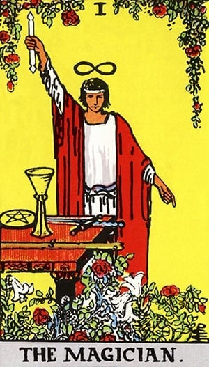

O Mago é uma carta do Tarô que simboliza a habilidade de manifestar desejos e transformar ideias em realidade. Ele representa a criatividade, a iniciativa e o poder de ação. O Mago é um mestre da comunicação e da manipulação de energias, capaz de usar seus recursos para alcançar seus objetivos. Ele também pode indicar um momento de novas oportunidades e potencial ilimitado, onde a pessoa tem o poder de criar seu próprio destino.